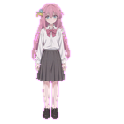
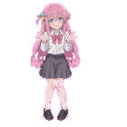

一只常驻 Windows 桌面的小挂件：无边框、置顶、色键透明。 她会饿、会生气、会被摸头，也会在你久不理她的时候主动开口。用 Python + Tkinter 单进程实现 —— 不依赖浏览器，也不依赖 Electron，常驻内存约 30 MB。
在桌面上放一只猫，常见做法是 Electron —— 为了一个挂件塞进一整个浏览器内核。这个项目走了另一条路：
用 Python 标准库自带的 tkinter，单进程常驻。代价是两件麻烦事得自己扛：
系统不支持逐像素透明（只能色键抠图），以及无边框窗口的
尺寸、位置、点击区域全部要手算。3.0 版把这两件事都处理干净了。

正常饱食度 > 30
饿了≤ 30
源素材的背景是纯品红 #FF00FF，图片里并没有 alpha 通道 ——
屏幕上看到「透明」，是因为程序把这个颜色声明成了透明的结果。
tkinter 只认精确颜色。做法是素材背景刷品红、窗口底色也设成品红、再把它声明为 transparentcolor。差一个色号就会露边。
2.0 的窗口固定 220×172，而角色只占 55×132 —— 那圈「看不见」的透明区域仍然吃掉鼠标点击、挡住桌面图标。3.0 改成按角色实际宽高反推窗口尺寸。
想调大小只改 PET_TARGET_H（当前 232，2.0 是 132），窗口尺寸、坐标、边距全部跟着算，不用手改一堆常量。
缩放会把品红和角色边缘混成脏边。在原始尺寸清只需 3px 半径；留到放大 1.8 倍后再清，就得用 16px —— 而那个半径会误伤角色内部的粉色。
LANCZOS 的核有负旁瓣，放大时会在强边缘产生明显振铃。这里是放大不是缩小，所以用 BICUBIC。
拖到屏幕边缘会停靠过去；拖到副屏之后，不会再被「随机走动」按主屏边界拽回主屏。
PET_TARGET_H（232px 高），宽度按原比例算，绝不拉伸变形。透明不是「图片带透明通道」，而是「这个颜色不画」。所以 Label / Canvas 的 bg 必须和 KEY_COLOR 完全一致。
| 版本 | 行数 | 主要变化 |
|---|---|---|
| 1.0 | 463 | 基础形态：透明窗口、拖动、随机走动、点击互动、定时提醒 |
| 2.0 | 710 | 三态系统、饱食度、气泡窗口 |
| 3.0 | 1016 | 窗口紧贴角色、动作反馈、悬停、贴边吸附、多屏修复 |
素材放在 zhuochong/，脚本用 __file__ 所在目录去找 —— 整份目录一起挪动不会失效。按 Esc 退出。